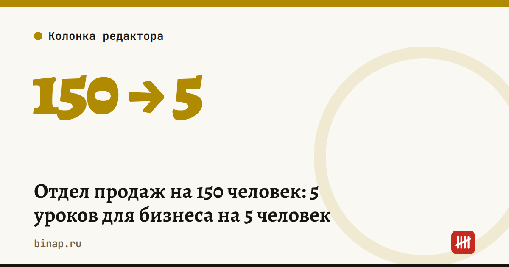

Отдел продаж на 150 человек: 5 уроков для бизнеса на 5 человек

Темы:Продажи и маркетинг
Когда-то я строил с нуля канал активных продаж и довёл команду до 150 человек. Этот канал давал 30% новых продаж компании. Большая часть уроков оттуда работает и в маленьком бизнесе.
- Считайте воронку, а не выручку. Сколько касаний, сколько встреч, сколько сделок. Выручка — результат, управлять можно только шагами до неё.
- Скрипт — это не костыль. Лучшие продавцы тоже работают по сценарию, просто своему. Запишите свой и дайте новичку.
- Один показатель на человека. Не десять KPI, а один главный на месяц.
- Короткий цикл обратной связи. Разбор звонков раз в неделю даёт больше, чем тренинг раз в год.
- Новый канал продаж запускайте как эксперимент. Маленький тест, понятная метрика, решение через месяц.
В бизнесе на пять человек продавец — это часто сам владелец. Тем важнее управлять собой по тем же правилам.